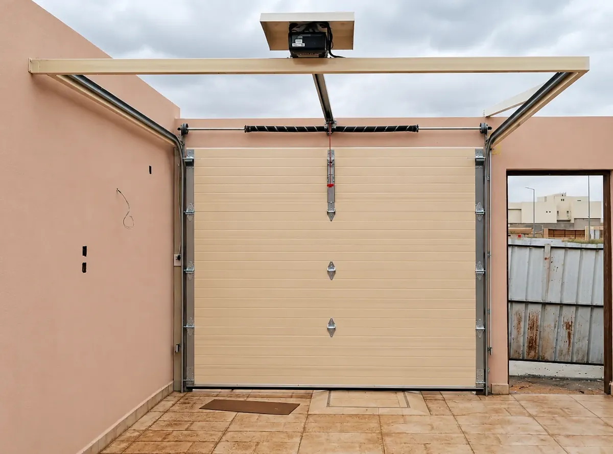
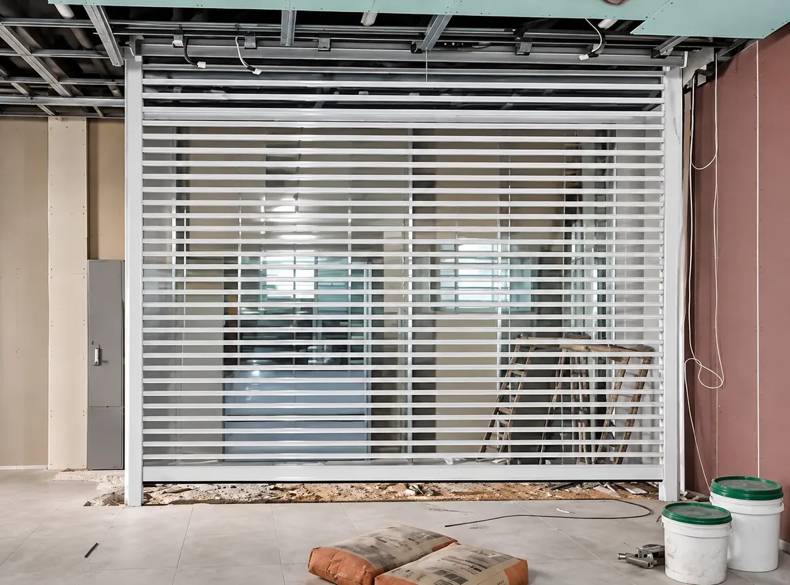
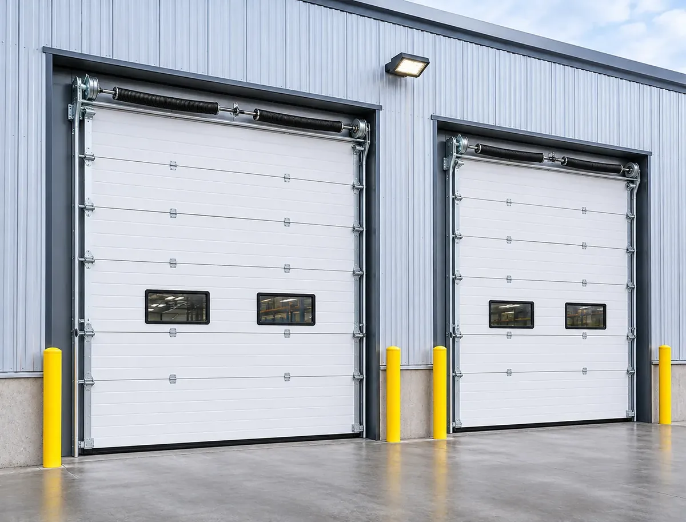
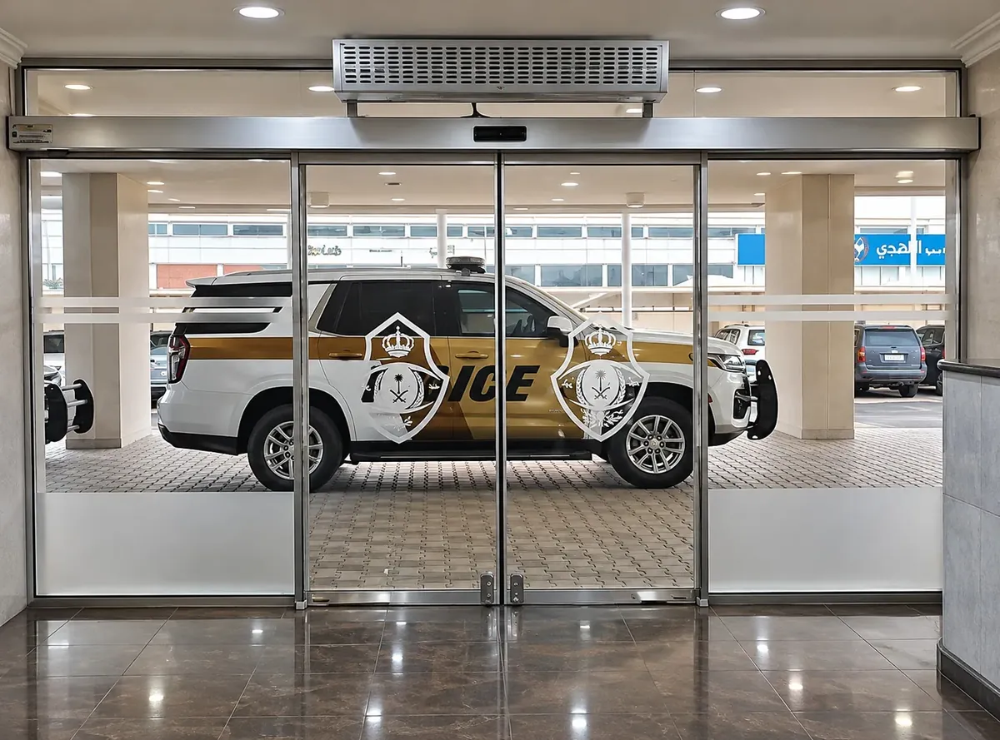
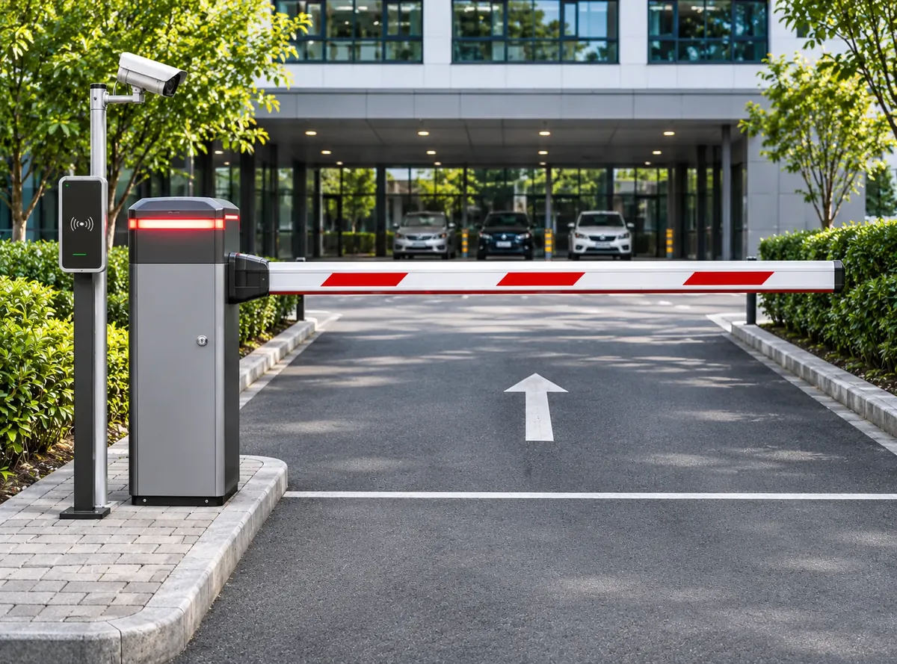
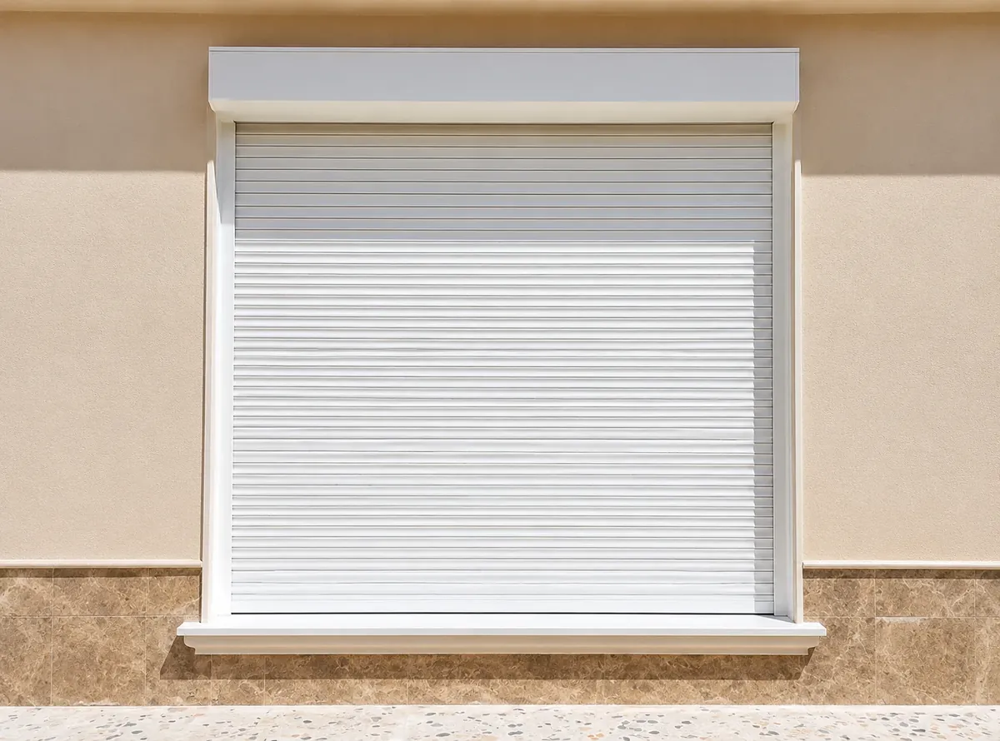

أبواب أوتوماتيكية وحلول تناسب منزلك ومنشأتك Automatic Doors and Solutions for Your Home and Facility
تعرّف على منتجات مدار رندا للمداخل السكنية والتجارية والصناعية، واختر الحل المناسب لاحتياجات مشروعك. Discover Madar Randa products for residential, commercial and industrial entrances, and choose the right solution for your project.

01أبواب الكراجاتGarage Doors
أبواب كراجات رول وأمريكية (سيكشنال)، بتصاميم ومقاسات تناسب واجهة منزلك، مع خيارات التشغيل الكهربائي والتحكم عن بُعد.Roller and American (sectional) garage doors, in designs and sizes to suit your home's façade, with electric operation and remote-control options.
اكتشف أبواب الكراجاتExplore Garage Doors
02أبواب الشتر والرولShutter & Roll-Up Doors
أبواب شتر ورول للمحلات والمصانع والمستودعات، بتصاميم معدنية وشبكية ومخرمة وشفافة من البولي كربونات.Shutter and roll-up doors for shops, factories and warehouses, in metal, grille, perforated and transparent polycarbonate designs.
اكتشف أبواب الشتر والرولExplore Shutter & Roll-Up Doors
03الأبواب الصناعية ومعدات التحميلIndustrial Doors & Loading Equipment
أبواب مقطعية صناعية وأبواب PVC سريعة وأبواب مقاومة للحريق، بالإضافة إلى معدات أرصفة التحميل والتفريغ للمستودعات والمنشآت الصناعية.Industrial sectional doors, high-speed PVC doors and fire-rated doors, plus loading dock equipment for warehouses and industrial facilities.
اكتشف الحلول الصناعيةExplore Industrial Solutions
04الأبواب الزجاجية الأوتوماتيكيةAutomatic Glass Doors
أبواب زجاجية سحابة ودوارة، وأبواب للمستشفيات، بتصاميم وأنظمة تشغيل تناسب حركة الزوار وطبيعة المنشأة.Sliding and revolving glass doors, and hospital doors, with designs and operating systems to suit visitor traffic and the type of facility.
اكتشف الأبواب الزجاجيةExplore Glass Doors 05
05
محركات البوابات والأبوابGate & Door Motors
محركات أوتوماتيكية للبوابات السحابة والمفصلية، مع خيارات للتحكم عن بُعد وأنظمة تشغيل تناسب وزن البوابة وطريقة فتحها.Automatic motors for sliding and swing gates, with remote-control options and operating systems to suit the gate's weight and opening method.
اكتشف محركات البواباتExplore Gate Motors
06الحواجز الأمنية وأنظمة المواقفSecurity Barriers & Parking Systems
حواجز لتنظيم دخول السيارات والأفراد، ومصدات أمنية، وأنظمة للتحكم في المداخل وإدارة مواقف السيارات.Barriers to control vehicle and pedestrian access, security blockers, and systems for entrance control and car park management.
اكتشف أنظمة الحواجز والمواقفExplore Barriers & Parking Systems
07شتر النوافذWindow Shutters
شتر نوافذ ألمنيوم معزول بخيارات تشغيل كهربائية ويدوية، يساعد على التحكم في أشعة الشمس وزيادة الخصوصية.Insulated aluminum window shutters with electric and manual operation options, helping you control sunlight and increase privacy.
اكتشف شتر النوافذExplore Window Shutters 08
08
أبواب هناجر الطائراتAircraft Hangar Doors
أبواب للفتحات الكبيرة بنظام الطي لأعلى أو الرفع الرأسي PVC، بمقاسات وتجهيزات تتناسب مع المتطلبات الهندسية للمشروع.Doors for large openings with upward-folding or PVC vertical-lift systems, with sizes and fittings to match the project's engineering requirements.
اكتشف أبواب هناجر الطائراتExplore Hangar Doorsماركات نوفرها لعملائناBrands We Supply
- الوكيل الحصري في المملكةExclusive agent in KSA


خدمات متكاملة من التوريد إلى ما بعد التركيب Integrated Services from Supply to After Installation
التوريدSupply
نوفر الأبواب والبوابات وأنظمة التشغيل بمواصفات تتناسب مع نوع المشروع واحتياجات الاستخدام.We supply doors, gates and operating systems with specifications that suit the project type and usage needs.
التركيبInstallation
يتولى فريقنا تجهيز وتركيب المنتجات وفق المقاسات والمتطلبات الفنية للموقع.Our team prepares and installs products according to the site's dimensions and technical requirements.
البرمجة والتشغيلProgramming & Commissioning
نضبط أنظمة التحكم والحركة، ونختبر التشغيل وتجهيزات الأمان المناسبة قبل التسليم.We set up control and motion systems, and test operation and the relevant safety features before handover.
الصيانة والدعم الفنيMaintenance & Technical Support
نقدم خدمات الفحص والإصلاح والبرمجة وتغيير قطع الغيار لمختلف المنتجات، مع الدعم الفني بعد التركيب.We provide inspection, repair, programming and spare-part replacement for all products, with technical support after installation.
مدار رندا.. أكثر من 30 سنة من الخبرة Madar Randa: Over 30 Years of Experience
مدار رندا متخصصة في حلول الأبواب الأوتوماتيكية والبوابات والحواجز الأمنية. بخبرة تتجاوز 30 عامًا وأكثر من 1000 مشروع منفذ، نقدم حلولًا للمنازل والمنشآت التجارية والصناعية، مع الاهتمام باختيار المنتجات المناسبة ودقة التنفيذ والدعم الفني بعد التركيب. Madar Randa specializes in automatic door, gate and security barrier solutions. With over 30 years of experience and more than 1000 completed projects, we provide solutions for homes and commercial and industrial facilities, with care in choosing the right products, precise execution and technical support after installation.
ثقة عملائنا تدعم مسيرتنا Our Clients' Trust Drives Our Journey
نعتز بثقة الجهات والمنشآت التي تعاملنا معها على مدار سنوات خبرتنا، وبالمشروعات التي نفذناها في قطاعات مختلفة. We value the trust of the organizations and facilities we have worked with over our years of experience, and the projects we have delivered across different sectors.


آراء عملائنا Client Reviews
تعرّف على تجارب عملائنا مع خدمات مدار رندا من خلال تقييماتهم الحقيقية المنشورة على Google. Read about our clients' experiences with Madar Randa through their genuine reviews published on Google.
الأسئلة الشائعة Frequently Asked Questions
تبحث عن باب أوتوماتيكي أو نظام يناسب مشروعك؟ Looking for an Automatic Door or System for Your Project?
أرسل صورة المدخل أو تفاصيل مشروعك، واحصل على عرض سعر يناسب احتياجك. Send a photo of the entrance or your project details, and get a quote that suits your needs.